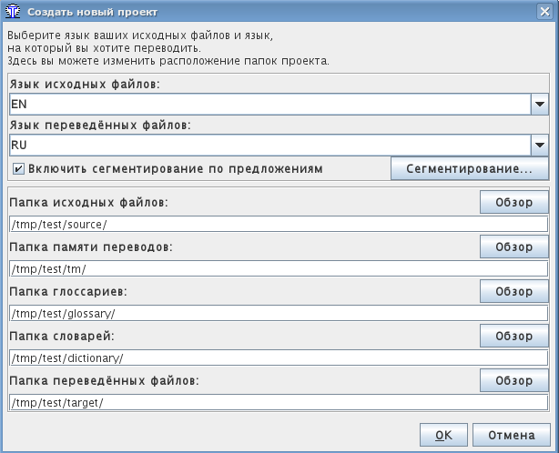

Эта краткая инструкция даёт лишь основные приёмы работы с программой. В идеале, всем пользователям нужно прочитать Руководство, чтобы познакомиться со всеми возможностями OmegaT.
Клавиатурные комбинации, описанные здесь, задействуют сочетание "ctrl+клавиша", но пользователи Mac должны читать это как "cmd+клавиша". Клавиша "cmd" на клавиатурах фирмы Apple помечена либо как "command" либо значком яблока.
Экран OmegaT состоит из трёх частей. Размер каждой из них можно изменять при помощи мыши. Слева находится редактор, где вы набираете свой перевод. Справа вверху расположено окно просмотра совпадений, в котором будут показываться совпадения из памяти переводов. Внизу находится окно просмотра глоссария, где показываются словарные совпадения.
OmegaT представляет текст оригинала в окне редактора 'сегментированным' на предложения (или абзацы). Вы переводите эти сегменты один за другим. Когда вы переходите от сегмента к сегменту, ваш перевод сохраняется в памяти переводов. Когда все сегменты переведены (или когда вы этого захотите), OmegaT использует память переводов, чтобы создать переведённые документы в каталоге “Target”.
OmegaT организует вашу работу в так называемые переводческие проекты. Для каждого проекта создаётся набор каталогов. Они используются для хранения исходных документов, которые нужно перевести, глоссариев и любых файлов памяти переводов, которые вы захотите использовать. Кроме того, OmegaT создаёт каталог “Target”, который будет содержать переведённые документы.
Выберите в меню Проект → Новый....
Войдите в каталог, который вы хотите использовать для хранения файлов проекта и введите желаемое имя проекта. Это имя будет использовано для названия главного каталога проекта; все файлы будут храниться в этом каталоге или его подкаталогах.
OmegaT предложит вам подтвердить или изменить каталоги проекта в следующем диалоговом окне:

Вы можете оставить расположение каталогов как есть, но проверьте, что коды языков оригинала и перевода верны. Выберите код языка (2 буквы) или код языка-и-региона (2 + 2 буквы) из выпадающего меню или введите их вручную (придерживайтесь двухбуквенного шаблона). Запомните расположение подкаталога Target (для ваших переведённых документов).
Если вы хотите, чтобы OmegaT сегментировала текст по предложениям, а не по абзацам, то было бы неплохо проверить Правила сегментирования.
Когда вы нажмёте OK, чтобы подтвердить настройки проекта, OmegaT предложит вам выбрать исходные документы для импорта. Вы можете загружать отдельные файлы или целые деревья каталогов (со всеми файлами во всех подкаталогах). Если вы случайно загрузили не те документы или слишком много документов, то вы можете просто удалить их из каталога Source вашего проекта (например, используя ваш любимый менеджер файлов).
Вы можете посмотреть на список переводимых файлов в окне Файлы проекта (через меню Проект → Файлы проекта..., если это окно не открылось автоматически). Если вы изменили содержимое каталога Source, не забудьте перезагрузить проект (через меню Проект → Перезагрузить). По умолчанию OmegaT сразу открывает первый файл в проекте.
Помните, что OmegaT может переводить только файлы ниже перечисленных форматов, если они соответствуют шаблонам, указанным в файловых фильтрах. Все остальные файлы будут проигнорированы.
После того, как вы настроите проект и файлы для перевода, OmegaT откроет первый файл оригинала в окне редактора. Первый сегмент выделен зелёным; ниже, в "поле перевода", показана копия оригинала. (На данном этапе весь текст вне поля перевода защищён и его нельзя изменять.) Вам нужно набирать ваш перевод между тэгами <сегмент 0001> и <конец сегмента>, тем самым перезаписывая текст оригинала.
Когда вы нажимаете "ENTER", происходит сразу несколько вещей: OmegaT добавляет пару сегментов (сегмент оригинала и сегмент перевода) в память переводов и автоматически переводит все идентичные сегменты, которые есть в других файлах проекта. Кроме того, программа ищет в памяти переводов и в глоссарии совпадения для следующего непереведённого сегмента.
Если OmegaT находит в памяти переводов нечёткие совпадения (30% подобия и более) для следующего сегмента, то они будут показаны в панели просмотра совпадений. По умолчанию сразу выделяется первое совпадение.
Чтобы вставить совпадение из окна просмотра совпадений в поле перевода, вы можете использовать клавиатурные комбинации:
Ctrl+I, чтобы вставить выбранное совпадение в позицию курсора, или...Ctrl+R, чтобы перезаписать весь сегмент выбранным совпадением.Если найдено несколько совпадений и вы предпочитаете использовать не первое из них:
Ctrl+2 для второго из показанных совпадений, Ctrl+3 для третьего и т.д.Ctrl+I или Ctrl+R, как указано выше.Вы можете указать OmegaT автоматически вставлять первое совпадение с процентом подобия выше определённого порога в поле перевода при открытии сегмента. Это настраивается в меню Опции → Настройки редактирования...)
Если OmegaT находит стопроцентно совпадающие термины в глоссарии, то они в качестве справки показываются в окне просмотра глоссариев. Их нельзя вставить в окно редактирования при помощи клавиатурных комбинаций.
OmegaT предоставляет широкий диапазон поисковых функций. Вызовите окно Поиска при помощи Ctrl+F и введите слово или фразу, которую вы хотите найти, в форме "Искать".
Кроме того, в поле редактирования (текст перевода активного сегмента) можно выделить слово или фразу и нажать Ctrl+F. Слово или фраза автоматически появятся в форме "Искать".
Когда вы перевели все сегменты (или раньше, по вашему желанию), OmegaT обновит переведённые документы, используя переводы, сохранённые в памяти переводов. Это делается из меню Проект → Создать переведённые документы.
OmegaT создаст переведённые версии всех переводимых документов в каталоге Source вашего проекта, вне зависимости от полноты их перевода. Полностью или частично переведённые файлы будут сохранены в каталог Target вашего проекта.
Чтобы завершить перевод, откройте эти документы в соответствующих приложениях (в браузере, текстовом процессоре и т.д.), чтобы проверить содержимое и форматирование вашего перевода. Затем вы можете вернуться в OmegaT, чтобы сделать необходимые исправления; не забудьте пересоздать переведённые документы.
OmegaT сохраняет форматирование исходных документов (жирный шрифт, курсив и т.д.), маркируя его особыми тэгами. Тэги OmegaT состоят из одной или нескольких букв и одной или нескольких цифр; иногда кроме них используется символ "/" (например, <f0>, <br10/>, </s2> и т.д.).
С этими тэгами нужно обращаться осторожно и убедиться, что они правильно переносятся в сегменты перевода.
В этих примерах мы выделили тэги, чтобы вы лучше их видели, но в OmegaT они не будут выделены. Синим выделены HTML-тэги, которые OmegaT проигнорирует, поскольку они полностью окружают сегмент, зелёным выделены тэги, которые OmegaT обрабатывает, поскольку они находятся внутри сегмента, а красным показано, как они появятся в OmegaT.
Вот пример сегмента в HTML:
<p>A different display font can be selected via the <b>Display Font</b>dialog. Open it via the <i>Settings</i> → <i>Display Font...</i>menu item. The font type and size can be changed from the dialog.</p>
Вот как OmegaT покажет тэги (подсвечено красным):
A different display font can be selected via the <b0>Display Font</b0>dialog. Open it via the <i1>Settings</i1> → <i2>Display Font...</i2>menu item. The font type and size can be changed from the dialog.
А вот как будет выглядеть перевод (в данном случае, на африкаанс):
'n Mens kan 'n ander vertoonfont kies met die <b0>Vertoonfont</b0>-dialoogkassie. Kies <i1>Opstelling</i1> → <i2>Vertoonfont...</i2>op die kieslys. Die lettertipe én die lettergrootte kan met dié dialoogkassie verander word.
Когда OmegaT создаст переведённый документ, HTML будет выглядеть так:
<p>'n Mens kan 'n ander vertoonfont kies met die <b>Vertoonfont</b>-dialoogkassie. Kies <i>Opstelling</i> → <i>Vertoonfont...</i>op die kieslys. Die lettertipe én die lettergrootte kan met dié dialoogkassie verander word.</p>
OmegaT не выявляет ошибки тэгов автоматически. Поэтому, прежде чем отдавать документ заказчику, проверьте его на наличие таких ошибок.
Выберите в меню Сервис → Проверить тэги. Программа покажет вам таблицу с сегментами, в которых не соответствуют друг другу тэги оригинала и перевода. Щёлкните на номере сегмента.
Вы перейдёте к ошибочному сегменту в редакторе, где сможете исправить некорректную расстановку тэгов.
Иногда ошибки тэгов могут даже привести к тому, что документ перестанет открываться. Поэтому нужно всегда проверять, что вы исправили все ошибки тэгов перед созданием переведённых файлов.
Кроме того, внимательно проверяйте окончательное форматирование, открыв переведённый документ в соответствующем ему приложении.